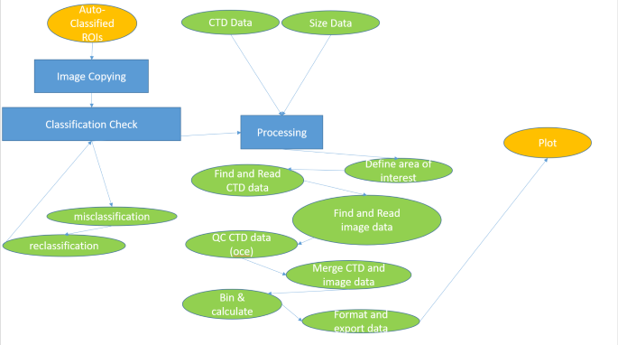

VPR_processing.Rmd
library(vprr)This document was produced at Bedford Institute of Oceanography (BIO) to accompany the vprr package, a processing and visualization package for data obtained from the Video Plankton Recorder (VPR) produced by SeaScan Inc. The VPR consists of a CPU, CTD, and camera system with different optical settings (i.e., magnifications). It captures underwater images and records their corresponding salinity, temperature, and depth. The vprr package functions to join environmental and plankton data derived from the CTD and camera, respectively, and calculate plankton concentration and averaged environmental variables along the path of the VPR. This document refers to processing of data from the 2008 version of the “Digital AutoVPR” model.The data processing tools in vprr should be adaptable to more recent VPR models from SeaScan Inc.
The VPR outputs two raw files (.dat and .idx) for a given time period in a deployment. These files are processed together in a software provided with the VPR (i.e., Autodeck), which decompresses the images, extracts “regions of interest” (ROIs), and outputs ROI image files and a corresponding CTD data file (.dat). The ROI file names are numeric consisting of 10 digits. The first 8 digits correspond to the number of milliseconds elapsed in the day at the time the image was captured. The last two digits correspond to the ROI identifier (01-99). The ROIs and corresponding CTD data are linked by their 8 digit time stamp. After the ROIs have been extracted from the raw files they may be sorted into categories manually or by an automated classification procedure. At BIO, the images were sorted using a software called “Visual Plankton” (VP) in Matlab, which was developed specifically for the VPR. A version of VP modified by personnel at BIO, primarily to update and utilize the Support Vector Machine (SVM) image classification component, can be found on GC code within the dfo-mar-odis group, under the visual plankton project in the Matlab directory. For more information or permission to view the linked project on GC code, contact DataServicesDonnees@dfo-mpo.gc.ca.
Visual Plankton outputs two text files (“aid” and “aidmeas” files) for each category of classification. Each “aid” (i.e., autoid) file contains file paths to individual ROIs that have been classified to the category of interest. The corresponding “aidmeas” file contains morphological data for the ROIs (e.g., long axis length, perimeter, etc.). The aid, aidmeas, and CTD files are the data inputs for processing using vprr. Note that the functionality of vprr is dependent on the format and directory structure of the data output from VP, but is not dependent on the use of VP itself. The primary functions of the vprr package are to manually correct misclassifications made by VP, join CTD and aid or aidmeas datasets, and compute plankton concentrations. Example code for visualization of final data products are provided in this vignette.
Figure 1. VPR data processing flow chart. Blue boxes represent software, green and yellow boxes represent data sets, where yellow is visual data and green is text format data. This document outlines the processes within ’Processing and Visualization (R).
The processing steps in R can be sub divided from the ’Post Processing and Visualization box in Figure 1. 
Before beginning data processing with vprr, it is recommended that a processing environment be created containing commonly used variables and file paths. The simplest and most reproducible way to achieve this is to write an R script where all the mission and system specific variables are contained, then save the environment as a RData file to be loaded at the start of any processing scripts. This processing environment contains reference to a station identifier csv file which should be created for each mission. This file links station names from deck sheets to the day and hour values on which Autodeck organizes files. Day and hour values represent the Julian day (3 digit) and two digit hour (24 hour clock) when sampling was done. Note that the day and hour values will be in the time zone of the computer used to run Autodeck. Ensure that this matches the time zone of the VPR CPU at the time of data collection to avoid a time offset between data sources.
Another important part of setting up the processing environment is ensuring the proper directory structure is in place, see Appendix 1 for details on the required directory structure.
# set VPR processing environment
# WORKING DIRECTORY
wd <- "C:/VPR_PROJECT/COR2019002/SCRIPTS"
setwd(wd)
# MISSION
cruise <- 'COR2019002'
year <- 2019
# CSV FILE WITH STATION NAMES AND CORRESPONDING DAY/HOUR INFO
station_names_file <- paste0("station_names_", cruise, ".csv")
# example: 'C:/VPR_PROJECT/vp_info/station_names_COR2019002.csv'
# note columns should be labeled : station, day, hour
# DIRECTORY FOR CTD DATA (output from AutoDeck)
castdir <- paste0('D:/', cruise, "/", cruise, "_autodeck/")
# example: 'D:/COR2019002/COR2019002_autodeck/'
# AUTOID FOLDER FOR MEASUREMENT DATA (aidmeas & aid files)
drive <- 'C:/'
auto_id_folder <- paste0(drive, "cruise_", cruise, "/", autoid)
# example: 'E:/COR2019002/autoid' #!!NO BACKSLASH AT END OF STRING
# PATH TO AUTOID CATEGORY FOLDERS
auto_id_path <- list.files(paste0(auto_id_folder, "/"), full.names = T)
# CREATE STANDARD DIRECTORY FOR SAVED DATA FILES PER MISSION
savedir <- paste0(cruise, '_data_files')
dir.create(savedir, showWarnings = FALSE)
# CREATE STANDARD DIRECTORY FOR SAVED DATA PRODUCTS PER MISSION AND STATION
stdir <- paste('data_product/', cruise, sep = "")
dir.create(stdir, showWarnings = FALSE, recursive = TRUE)
# DEPTH BIN SIZE FOR AVERAGING
binSize <- 3
# CATEGORY OF INTEREST (WHICH CATEGORIES WILL BE PROCESSED AND VISUALIZED)
category_of_interest <-
c(
'krill',
'Calanus',
'chaetognaths',
)
#### SAVE ####
# SAVE ALL FILE PATHS AND SETTINGS AS PROJECT ENVIRONMENT
save.image(file = paste0(cruise,'_env.RData'))An example of the station names csv file looks like this:
csv <- read.csv('station_names_COR2019002.csv')
head(csv)
#> day hour station day_hour
#> 1 220 19 W5 d220.h19
#> 2 221 0 W6 d221.h00
#> 3 221 1 W6 d221.h01
#> 4 221 3 W7 d221.h03
#> 5 221 4 W7 d221.h04
#> 6 221 22 W12 d221.h22Once this environment is set, it can be loaded into any processing session by using
load('COR2019002_env.RData') # where COR2019002 is mission nameIf sharing processing code with colleagues on version control, keeping the environment variables separate (outside of the git project) will allow collaboration while avoiding inconsistencies in file paths or folder names.
ROIs are organized into folders corresponding to their assigned classification categories from VP. The information in each aid file produced by VP is used to create a folder for each classification category containing ROIs that have been classified to that category. This step is only required if manual re-classification (see Section 2.2) is intended. Further details on image copying are provided in Section 3.
Classifications from VP are manually checked, which allows for manual correction and addition of categories not previously used for classification in VP. A user-defined subset of the ROIs that have been copied in Section 2.1 is manually sorted to correct for misclassifications made by VP. Updated aid and aidmeas files are produced. Further details on manual re-classification are provided in Section 4.
Joining data outputs from Autodeck (ctd .dat files) and VP (aid and aidmeas files). The aid and aidmeas files, which may have been updated (see Section 2.3) are joined with CTD text files by the 8 digit time stamp. The data are then averaged in user-defined vertical bins to produce a time series of plankton concentrations and environmental variables. Quality controlled data products (before and after binning) are then exported in simple formats (csv, RData, oce) for plotting and analysis. Further details on data processing are provided in Section 5.
In this step, ROIs are copied to folders that are organized based on the day and hour of data collection and classification category assigned from VP. The images are organized by Autodeck into day and hour; however, reorganizing them based on classification allows easier human interaction with the data and visual inspection of classifications by VP. Moreover, this directory structure is used by the next step of processing (i.e., manual re-classification). To implement this step use the function vprr::vpr_autoid_copy(). For more information on input variables, please see documentation for vpr_autoid_copy (?vpr_autoid_copy).
# create variables
# ---------------------
basepath <- "C:\\data\\cruise_COR2019002\\autoid\\"
# note this is the same as the auto_id_folder environment variable except the file separator is different, because this script will run source code in command line which does not recognize '/' as a file separator
day <- "123"
hour <- "01" # note leading zero
classifier_type <- "svm"
classifier_name <- "myclassifier"
# run file organizer
# ---------------------
vpr_autoid_copy(basepath, day, hour, classifer_type, classifier_name)Manual re-classification of some categories after automated classification by VP may be required to achieve identification accuracy standards. In this step, ROIs are displayed on the screen one at a time for manual verification. If VP has misclassified an image or if it falls into a new user defined category (described below), the image can be re-classified. At the end of this process, text files which match the formats produced by VP for aid and aidmeas files are generated with the new classifications. The manual re-classification process also allows for creation of new categories. This is especially useful for classification of rare categories that were not defined prior to classification in VP. For example, if VP produces a classification group “copepods” containing species A and species B, the user can add “species A” and “species B” categories in the manual re-classification step using the function vprr::vpr_category_create (see example below). After completing manual re-classification for a day-hour set, new aid and aidmeas files are created for new categories, which are identical in format to original aid and aidmeas files produced by VP.
auto_id_folder variable.vprr::vpr_category_create() function sets up the folder structure for any new categories which have been added to the list of interest.vprr::vpr_manual_classification(). This function has a few optional arguments to customize the manual re-classification experience, notably gr which is a logical value determining whether or not manual re-classification options appear as pop ups or in the console, as well as img_bright, a logical which determines whether or not the original image is appended with an extra bright version of the image. Having a bright version of the image allows the user to see the outline of the organism better, any thin appendages become more clear and gelatinous organisms like chaetognaths or ctenophores are easier to distinguish.#### MANUAL RE-CLASSIFICATION
# -------------------------------------
# Once classified images are sorted by taxa
# verify classification accuracy by manually
# looking through classified images
#### USER INPUT REQUIRED ####
load('COR2019002_env.RData')
day <- '235'
hr <- '19' # keep leading zeros, must be two characters
category_of_interest <-
c(
'krill',
'Calanus',
'chaetognaths',
'ctenophores',
'Other',
'larval_fish',
'marine_snow',
'small_copepod',
'other_copepods',
'larval_crab',
'amphipod',
'Metridia',
'Paraeuchaeta',
'cnidarians',
'speciesA', # new category
'speciesB' # new category
)
# add new category (optional)
vpr_category_create(taxa = category_of_interest, auto_id_folder)
# ensures there is proper folder structure for all categories of interest
# reclassify images
vpr_manual_classification(day = day, hour= hr, basepath = auto_id_folder,gr = FALSE,
taxa_of_interest = category_of_interest, scale = 'x300',
opticalSetting = 'S3')The function vprr::vpr_manual_classification() produces two files (‘misclassified’ and ‘re-classified’ text files) as a record of manual re-classification, which are found in the R project working directory in folders named by the day and hour that the data were collected. The function vprr::vpr_autoid_create() takes these files and outputs new aid and aidmeas files in the R working directory in folders named by classification category. This step should be run after each hour of data is manually re-classified.
#### REORGANIZE ROI AND ROIMEAS DATA
# -----------------------------------------
day_hour_files <- paste0('d', day, '.h', hr)
misclassified <- list.files(day_hour_files, pattern = 'misclassified_', full.names = TRUE)
reclassify <- list.files(day_hour_files, pattern = 'reclassify_', full.names = TRUE)
# MOVE ROIS THAT WERE MISCLASSIFIED INTO CORRECT FILES & REMOVE MISCLASSIFIED ROIS
vpr_autoid_create(reclassify, misclassified, auto_id_folder)The last step of manual re-classification includes some manual file organization and final checks. These files should be manually reorganized in a new directory which will become the new auto_id_folder (see Appendix 1: Directory Structure). Remember that aid and aidmeas files from any categories which were not manually checked and re-classified should also be added to this new auto_id_folder. After the updated aid and aidmeas files have been manually reorganized they should be quality controlled using vprr::vpr_autoid_check(). This function removes any empty aid files created. Empty files are created if there are no images of a specific classification group in a particular hour of VPR deployment. Empty files can cause errors in processing down the line. This function also checks that (1) aid and aidmeas files are aligned within an hour of data; (2) aid and aidmeas files include the same number of ROIs; and (3) the VPR tow number for all files is the same.
#### FILE CHECK
# --------------------------------
# aid check step
# removes empty aid files, and checks for errors in writing
vpr_autoid_check(basepath, cruise) #OUTPUT: text log 'CRUISE_aid_file_check.txt’ in working directoryThis is the main chunk of coding required to generate data products. This step does not require image copying (Section 3) or manual re-classification (Section 4) steps. The following is a walk-through of processing data from a DFO field mission (i.e. mission COR2019002) in the southern GSL (Gulf of St. Lawrence) in 2019.
First, all libraries should be loaded and the processing environment, described in Section 2.4 should be loaded.
##### PROCESSING --------------------------------------------------------------------------------------------------------------------
library(vprr)
#### FILE PATHS & SETTINGS --------------------------------------------------------------------------------------------------------------------
# loads processing environment specific to user
load('COR2019002_env.RData')This section allows a user to process all stations of a particular mission in a loop. This can be modified or removed based on personal preference
##### STATION LOOP ----------------------------------------------------------------------------------------------------------------------------
all_stations <- read.csv(station_names_file, stringsAsFactors = FALSE)
all_stations_of_interest <- unique(all_stations$station)
for (j in 1:length(all_stations_of_interest)){
station_of_interest <- all_stations_of_interest[j]
cat('Station', station_of_interest, 'processing... \n')
cat('\n')Optical settings and image volume variables should be set. If they are consistent throughout the mission, they could also be added to the processing environment (Section 2.4).
#==========================================#
# Set optical settings & Image Volume #
# !Should be updated with each mission! #
#==========================================#
if(cruise == "COR2019002") {
#VPR OPTICAL SETTING (S0, S1, S2 OR S3)
opticalSetting <- "S2"
imageVolume <- 108155 #mm^3
}CTD casts are loaded in using vprr::vpr_ctd_files to find files and vprr::vpr_ctd_read to read in files. During CTD data read in, a standardized seawater density variable sigmaT is derived using the function oce::swSigmaT, and depth (in meters) is derived from pressure using the function oce::swDepth.
#get day and hour info from station names list
dayhour <- vpr_dayhour(station_of_interest, file = station_names_file)
##### PULL CTD CASTS ----------------------------------------------------------------------------------------------------------------------------
# get file path for ctd data
# list ctd files for desired day.hours
ctd_files <- vpr_ctd_files(castdir, cruise, dayhour)
##### READ CTD DATA ----------------------------------------------------------------------------------------------------------------------------
ctd_dat_combine <- vpr_ctd_read(ctd_files, station_of_interest)
cat('CTD data read complete! \n')
cat('\n')VPR data files are then found, within the VP directory structure.
##### FIND VPR DATA FILES ----------------------------------------------------------------------------------------------------------------------
# Path to aid for each taxa
aid_path <- paste0(auto_id_path, '/aid/')
# Path to mea for each taxa
aidmea_path <- paste0(auto_id_path, '/aidmea/')
# AUTO ID FILES
aid_file_list <- list()
aidmea_file_list <- list()
for (i in 1:length(dayhour)) {
aid_file_list[[i]] <-
list.files(aid_path, pattern = dayhour[[i]], full.names = TRUE)
# SIZE DATA FILES
aidmea_file_list[[i]] <-
list.files(aidmea_path, pattern = dayhour[[i]], full.names = TRUE)
}
aid_file_list_all <- unlist(aid_file_list)
aidmea_file_list_all <- unlist(aidmea_file_list)
remove(aid_file_list, aidmea_file_list, aid_path, aidmea_path)ROI and measurement data files are then read using vprr::vpr_autoid_read().
##### READ ROI AND MEASUREMENT DATA ------------------------------------------------------------------------------------------------------------
# ROIs
roi_dat_combine <-
vpr_autoid_read(
file_list_aid = aid_file_list_all,
file_list_aidmeas = aidmea_file_list_all,
export = 'aid',
station_of_interest = station_of_interest,
opticalSetting = opticalSetting
)
# MEASUREMENTS
roimeas_dat_combine <-
vpr_autoid_read(
file_list_aid = aid_file_list_all,
file_list_aidmeas = aidmea_file_list_all,
export = 'aidmeas',
station_of_interest = station_of_interest,
opticalSetting = opticalSetting
)
cat('ROI and measurement data read in complete! \n')
cat('\n')Next, CTD and aid data are merged to create a data frame describing both environmental variables (eg. temperature, salinity) and classified images. The function used is vprr::vpr_ctdroi_merge().
##### MERGE CTD AND ROI DATA ---------------------------------------------------------------------------------------------------------------------
ctd_roi_merge <- vpr_ctdroi_merge(ctd_dat_combine, roi_dat_combine)
cat('CTD and ROI data combined! \n')
cat('\n')Before final export of data products, the following variables are added to the data frame: time in hours avg_hr is calculated, and a time stamp (ymdhms) with POSIXct signature in Y-M-D h:m:s format is added using the function vpr_ctd_ymd.
##### CALCULATED VARS ----------------------------------------------------------------------------------------------------------------------------
# add avg hr and sigma T data and depth
data <- ctd_roi_merge %>%
dplyr::mutate(., avg_hr = time_ms / 3.6e+06)
data <- vpr_ctd_ymd(data, year)
# ensure that data is sorted by time to avoid processing errors
data <- data %>%
dplyr::arrange(., time_ms)
cat('Initial processing complete! \n')
cat('\n')
# clean environment
remove(ctd_roi_merge)Average plankton concentration and environmental variables (e.g., temperature, salinity, density, etc.) are then computed within a user defined depth bin. The bin-averaging step standardizes plankton concentrations when the VPR does not sample the water column evenly. This can occur due to characteristics of the deployment or variability in the sampling rate, which is not necessarily constant in older versions of the VPR. Binning also reduces noise in the data. First, an oce CTD object is created using vprr::vpr_oce_create(). For more information on the oce package, see dankelley/oce on GitHub. Then, bin-averaging is done using vprr::bin_cast(). Concentrations are calculated for each category of interest.
##### BIN DATA AND DERIVE CONCENTRATION ----------------------------------------------------------------------------------------------------------
ctd_roi_oce <- vpr_oce_create(data)
# bin and calculate concentration for all taxa (combined)
vpr_depth_bin <- bin_cast(ctd_roi_oce = ctd_roi_oce, binSize = binSize, imageVolume = imageVolume)
# get list of valid taxa
taxas_list <- unique(roimeas_dat_combine$taxa)
# bin and calculate concentrations for each category
taxa_conc_n <- vpr_roi_concentration(data, taxas_list, station_of_interest, binSize, imageVolume)
cat('Station', station_of_interest, 'processing complete! \n')
cat('\n')
# bin size data
size_df_f <- vpr_ctdroisize_merge(data, data_mea = roimeas_dat_combine, taxa_of_interest = category_of_interest)
size_df_b <- vpr_size_bin(size_df_f, bin_mea = 3)Finally, data are saved as RData and csv files for export and plotting. Data are also saved as an oce object in order to preserve both data and metadata in an efficient format.
##### SAVE DATA ---------------------------------------------------------------------------------------------------------------------------------
# Save oce object
oce_dat <- vpr_save(taxa_conc_n)
save(file = paste0(savedir, '/oceData_', station_of_interest,'.RData'), oce_dat) # oce data and metadata object
# Save RData files
save(file = paste0(savedir, '/ctdData_', station_of_interest,'.RData'), ctd_dat_combine) #CTD data
save(file = paste0(savedir, '/stationData_', station_of_interest,'.RData'), data) # VPR and CTD data
save(file = paste0(savedir, '/meas_dat_', station_of_interest,'.RData'), roimeas_dat_combine) #measurement data
save(file = paste0(savedir, '/bin_dat_', station_of_interest,'.RData'), vpr_depth_bin) # binned data with cumulative concentrations
save(file = paste0(savedir, '/bin_size_dat_', station_of_interest,'.RData'), size_df_b) # binned data including measurements
cat('CTD, ROI-VPR merge, ROI measurement saved as RData! \n')
cat('\n')
# Write csv files
# write.csv(file = paste0(stdir, '/vpr_data_unbinned', station_of_interest, '.csv'), data, row.names = F) # VPR and CTD data (not binned)
# write.csv(file = paste0(stdir, '/vpr_meas', station_of_interest, '.csv'), roimeas_dat_combine) # measurement data
write.csv(file = paste0(stdir, '/vpr_data_binned', station_of_interest, '.csv'), taxa_conc_n) # VPR and CTD data with concentrations by taxa
cat('ROI measurments, ROI-CTD merge-unbinned, and ROI-CTD merge-binned written to csv! \n')
cat('\n')
} #end of station loopAlthough not primarily a plotting package, vprr can produce contour plots, profile plots and temperature-salinity (TS) plots from VPR data sets. A few example plots are provided in the following code. The first step to plotting is properly loading in the processed VPR data objects created in processing. The environment, described in Section 2.4 should also be loaded. The individual data files are found by distinct names (e.g., “stationData”). The directory structure may be different depending on the savedir where data files were saved during processing. Note that the following plotting examples are tailored for tow-yo pattern VPR deployments.
##### FILE PATH & SETTINGS -----------------------------------------------------------------------------------------------------------------------
library(vprr)
# loads all file paths and environment vars specific to User
load('COR2019002_env.RData')
#find all data files
fn_all_st <- list.files(paste0(cruise, "_data_files/"), pattern = "stationData", full.names = T)
fn_all_meas <- list.files(paste0(cruise, "_data_files/"), pattern = "meas", full.names = T)
fn_all_conc <- list.files(paste0("data_product/", cruise, "/"), pattern = "data_binned", full.names = T)
fn_all_bin <- list.files(paste0(cruise,"_data_files/"), pattern = 'bin_dat', full.names = T)Once files are loaded, plots for all stations in a mission can be generated using a loop, in order to efficiently generate comparable plots. The example below uses a loop to run through a list of stations described by a csv file. This loop also isolates two specific classification categories to plot (eg. “Calanus” and “krill”).
####START STATION LOOP ---------------------------------------------------------------------------------------------------------------------------
setwd(wd)
all_stations <- read.csv(station_names_file, stringsAsFactors = FALSE)
all_stations_of_interest <- unique(all_stations$station)
taxa_to_plot <- c("Calanus", "krill")
for (j in 1:length(all_stations_of_interest)){
setwd(wd)
station <- all_stations_of_interest[j]
cat('station', station ,'starting to plot.... \n')
cat('\n')Data files are loaded for the specific station of interest. This loads in all relevant RData files as well as the concentration data saved as a csv file.
#load station roi and ctd data
fn_st <- grep(fn_all_st, pattern = station, value = TRUE, ignore.case = TRUE)
fn_meas <- grep(fn_all_meas, pattern = station, value = TRUE, ignore.case = TRUE)
fn_conc <- grep(fn_all_conc, pattern = station, value = TRUE, ignore.case = TRUE)
fn_bin <- grep(fn_all_bin, pattern = station, value = TRUE, ignore.case = TRUE)
load(fn_st)
load(fn_meas)
load(fn_conc)
load(fn_bin)
# load concentration data
taxa_conc_n <- read.csv(fn_conc, stringsAsFactors = F)
station_name <- paste('Station ', station)The final section of set up indicates the directory in which plots will be saved and provides generic plot size arguments which will control how large the saved .png files are.
# directory for plots
stdir <- paste0('figures/', cruise, '/station', station)
dir.create(stdir, showWarnings = FALSE, recursive = TRUE)
setwd(stdir)
width = 1200
height = 1000The following example presents a plot of the concentrations of a taxon as scaled bubbles along the tow path, overlain on contours of an environmental variable from the CTD. The main function used is vprr::vpr_plot_contour() which uses a standard VPR data frame (taxa_conc_n - produced from processing (Section 5)) and plots the background contours. Interpolation methods can be adjusted based on data or preference. The VPR tow path can be added on top of contours. This method can be repeated with various environmental variables (e.g., temperature, salinity etc.) used to calculate the contours, by changing the var argument in vprr::vpr_plot_contour().
# Density (sigmaT)
png('conPlot_taxa_dens.png', width = width, height = height)
p <- vpr_plot_contour(taxa_conc_n[taxa_conc_n$taxa %in% c(taxa_to_plot),], var = 'density', dup = 'strip', method = 'oce', bw = 0.5)
p <- p + geom_line(data = data, aes(x = avg_hr - min(avg_hr), y = pressure), col = 'snow4', inherit.aes = FALSE) +
geom_point(data = taxa_conc_n[taxa_conc_n$taxa %in% c(taxa_to_plot),], aes(x = avg_hr, y = min_pressure, size = conc_m3), alpha = 0.5)+
ggtitle(station_name ) +
labs(size = expression("Concentration /m" ^3), fill = 'Density')+
scale_size_continuous(range = c(0, 10)) +
facet_wrap(~taxa, ncol = 1, scales = 'free') +
theme(legend.key.size = unit(0.8, 'cm'),
axis.title = element_text(size = 20),
strip.text = element_text(size = 20),
plot.title = element_text(size = 32),
axis.ticks = element_line(size = 1, lineend = 'square'),
axis.text = element_text(size = 30),
legend.text = element_text(size = 20),
legend.title = element_text(size = 25)
)
print(p)
dev.off()Vertical profiles of plankton concentration and environmental variables compressed over the sampling duration can be generated using vprr::vpr_plot_profile(). This type of plot indicates the overall pattern in vertical distribution over the VPR deployment.
png('profilePlots.png', width = 1000, height = 500)
p <- vpr_plot_profile(taxa_conc_n, taxa_to_plot)
print(p)
dev.off()Temperature-salinity (TS) plots can be generated to visualize how plankton concentration varies across different water masses. In the example below, a TS plot is produced in ggplot (with labeled isopycnals), and concentration bubbles for each selected classification group are overlaid on the plot. The basic TS bubble plot can be easily manipulated using ggplot2 grammar, for example the plots can be faceted by classification group or axis labels and sizing can be adjusted (see ggplot2 package for more inofrmation).
####TS BUBBLE PLOT ----------------------------------------------------------------------------------------------------------------------------
# plot by taxa
taxa_conc <- taxa_conc_n[taxa_conc_n$conc_m3 > 0,]
png('TS_conc_taxa.png', width = 1000, height = 500)
p <- vpr_plot_TS(taxa_conc[taxa_conc$taxa %in% c(taxa_to_plot),], var = 'conc_m3') +
facet_wrap(~taxa, nrow = 1) +
theme(strip.text = element_text(size = 18),
axis.title = element_text(size = 20),
panel.spacing = unit(2, 'lines'))
print(p)
dev.off()
cat('station', station, 'complete! \n')
cat('\n')
} # end station loopThe functions in vprr were created for a specific project and have not been tested on a broad range of field mission data. It is possible that deviations in data format and directory structure from that described herein may result in errors when using vprr. The vprr package was developed for the purpose of processing data collected during tow-yo VPR deployments and image classification using VP. The purpose of this document is to provide a template for processing and visualizing VPR data that can be adapted by other users for their own objectives.
Visual Plankton (Matlab image classification software) requires a very specific directory structure in order to function. Since this processing is meant to directly follow this image classification, the VP directory structure is used for consistency. This allows a smooth transition between the Matlab classifications and the completion of processing in R. The directory structure required is described below
data
cruise_name
autoid
clpar
feature
idsize
rois
tefeature
trrois
Aid files - Visual Plankton file output text file, listing file path information for ROI’s of a specific classification group
AidMeas files (AutoID measurements) - Visual Plankton output text file, listing measurement data for ROI’s of a specific classification group. Unit is pixels and columns are ‘Perimeter’, ‘Area’, ‘width1’, ‘width2’, ‘width3’, ‘short_axis_length’, ‘long_axis_length’
Auto Deck - software which pulls plankton images from Video Plankton Recorder frames based on specific settings
Auto ID - The automatic classification given to an image from Visual Plankton machine learning algorithm
AutoID files - Includes both Aid and AidMeas files as part of Visual Plankton’s automatic classifications
BIO - Bedford Institute of Oceanography, a research institute in Halifax NS, Canada
Classification category (Taxa) - A defined group under which VPR images can be classified, often represents a taxonomic group (e.g. Krill), but can also be defined by image type (e.g. ‘bad_image_blurry’), or other (e.g. ‘marine_snow’), should be one continuous string (no spaces)
CPU - Central processing unit (computer processor)
CTD - Conductivity, Temperature and depth sensor instrument
Day - Julian calendar day on which VPR data was collected (three digits)
Hour - Two digit hour (24 hour clock) describing time at which VPR data was collected
Image volume - The measured volume of water captured within a VPR image. Calculated based on optical setting and VPR standards
Optical Setting - A VPR setting controlling image magnification and field of view, which can be S0, S1, S2 or S3, where S0 has the greatest magnification and smallest image volume, and S3 has the least magnification and largest image volume
ROI - Region of interest, images identified by autodeck within VPR frames based on settings defined in autoDeck program
SeaScan - Oceanographic instrument manufacturing company
station - A named geographic location, where the VPR was deployed
Tow-yo - A VPR deployment method where the VPR is towed behind a vessel while being raised and lowered through the water column in order to sample over both depth and distance
TRROIS - Training set of images used to train machine learning algorithm in Visual Plankton
VP - Visual Plankton program run in Matlab
VPR - Video Plankton Recorder, oceanographic instrument used to image small volumes of water for the purpose of capturing images of plankton
vprtow# - A numeric code which is unique to each VPR deployment
Working Directory - File path on your computer that defines the default location of any files you read into R, or save out of R